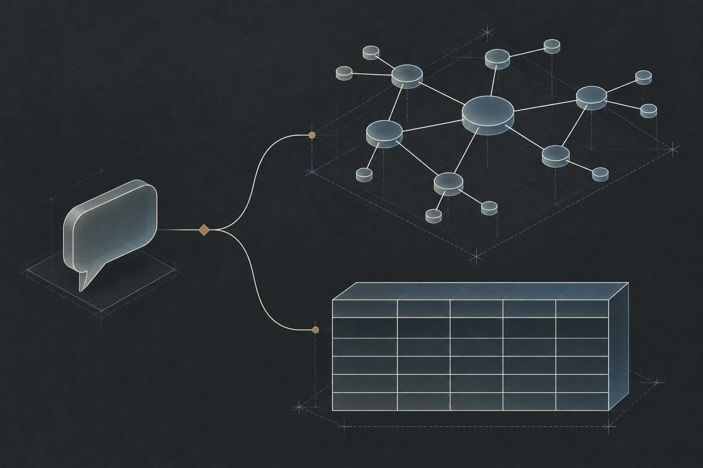

01What I built
I defined the steps for translating and validating a prompt before executing SQL.
02What it enables
Users can ask a question in familiar language instead of composing the first SQL statement themselves.
03Tools & methods
ProjectData systems
A prototype that turns a business question into a structured MySQL query.

01What I built
I defined the steps for translating and validating a prompt before executing SQL.
02What it enables
Users can ask a question in familiar language instead of composing the first SQL statement themselves.
03Tools & methods